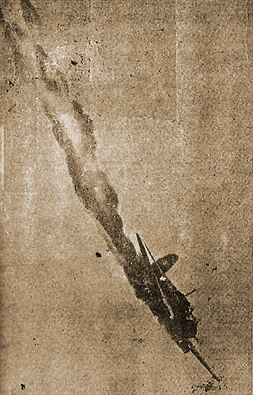

|
j
a v a s c r i p t |
Pg. 5/5
September 22, 1944

Helldiver
The Tribune has a remarkable picture of an American dive-bomber aflame on a dive — even the pilot can be seen. "24 Enemy Planes Downed" — including 6 "probables" in the forenoon action only. "Raiders Repulsed." Two Japanese planes failed to return. "Aside from the loses sustained in a part of shipping and in burning of some fuel on the ground, our side suffered only negligible damage." The article says 200 planes came between 0930 and 1030 yesterday, and 120 planes came in 3 waves that afternoon. Damage from the afternoon raid is still "under investigation." "Scores of Manilans are killed, injured by inhuman strafing" — an article much like the one following the bombing of Davao. Only one hospital is mentioned: the Chinese General Hospital near the Grace Park Airfield — there's an anti-aircraft battery nearby. Most of the civilians listed as killed or hurt while standing on stray corners of the city suffered or died not as a result of strafing, but by anti-aircraft shrapnel which blanketed the city. What's incredible is that only around 100 were killed or injured despite the late air raid warning. In fact, the article admits that many thought it was just practice. My guess is that a lot more were hurt at Grace Park, but admitting it smacks of negligence. Incidentally, it was not the National Development that went up in flames but the oil in Pandacan. ...ooOoo... |
|
|
|
|